About Kashmir
Nestled in the Himalayas, Kashmir is famous for its breathtaking landscapes, saffron fields, wooden houseboats, and the shimmering Dal Lake. Every season transforms it into a new painting.
Where snow-kissed mountains meet blooming valleys and shikara rides whisper peace.
Nestled in the Himalayas, Kashmir is famous for its breathtaking landscapes, saffron fields, wooden houseboats, and the shimmering Dal Lake. Every season transforms it into a new painting.
 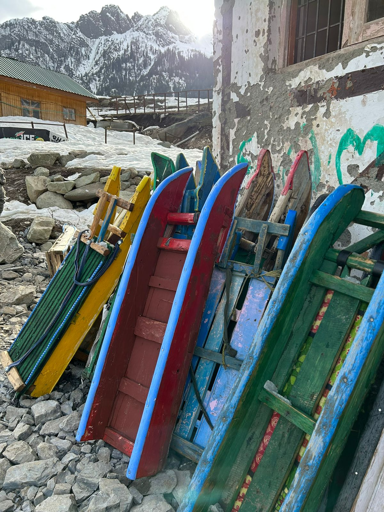
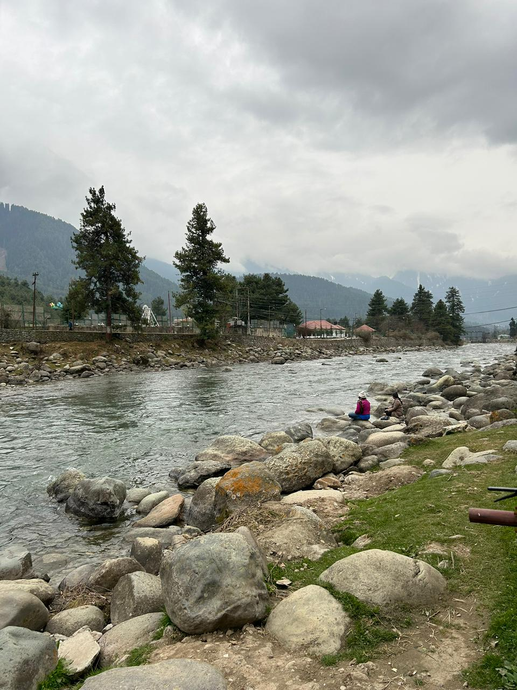
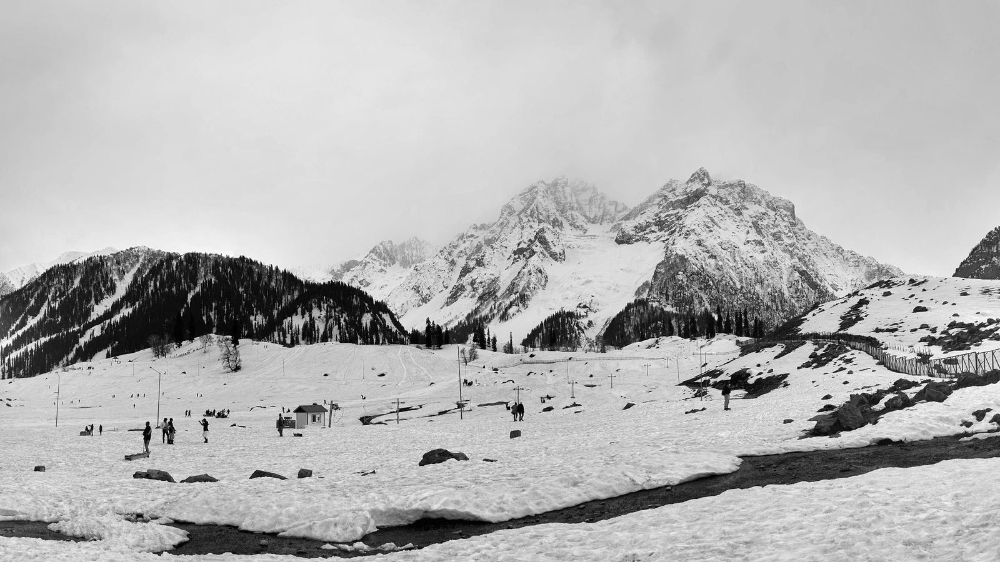
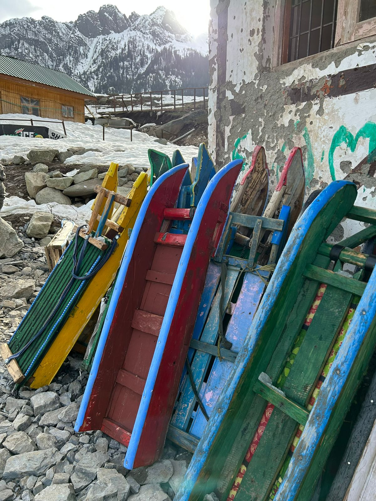
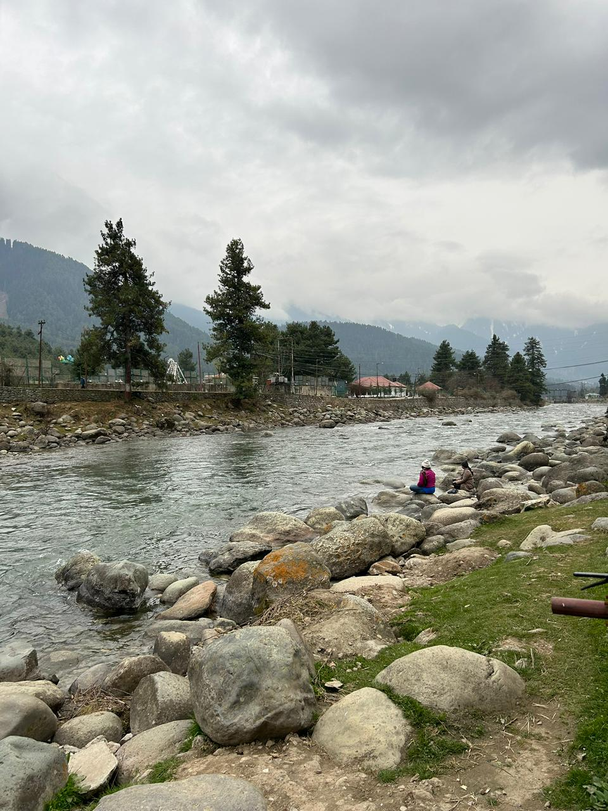
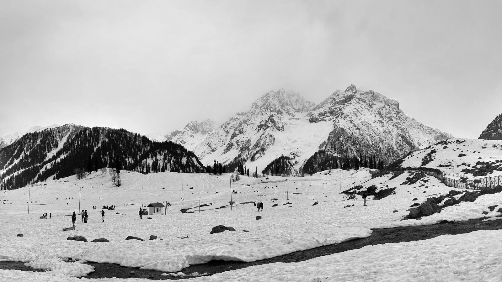
 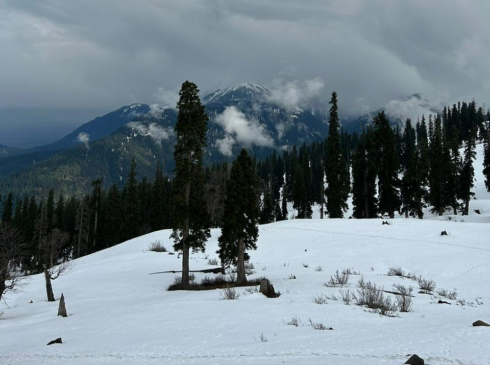
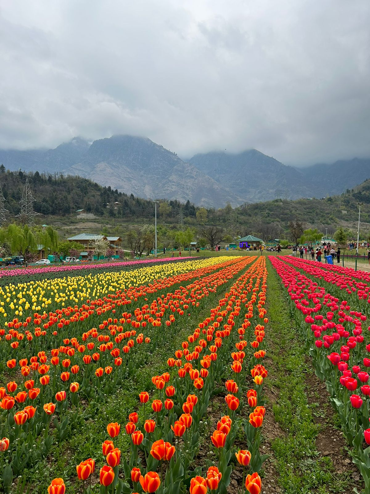
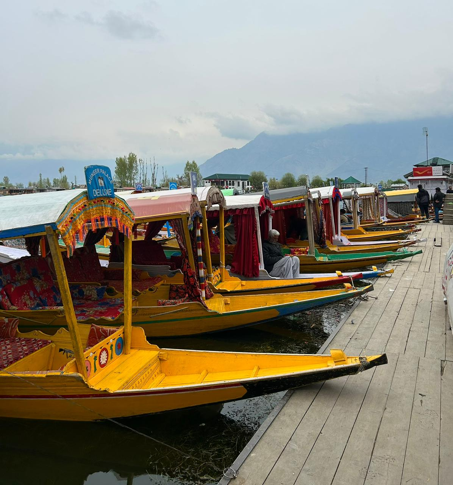
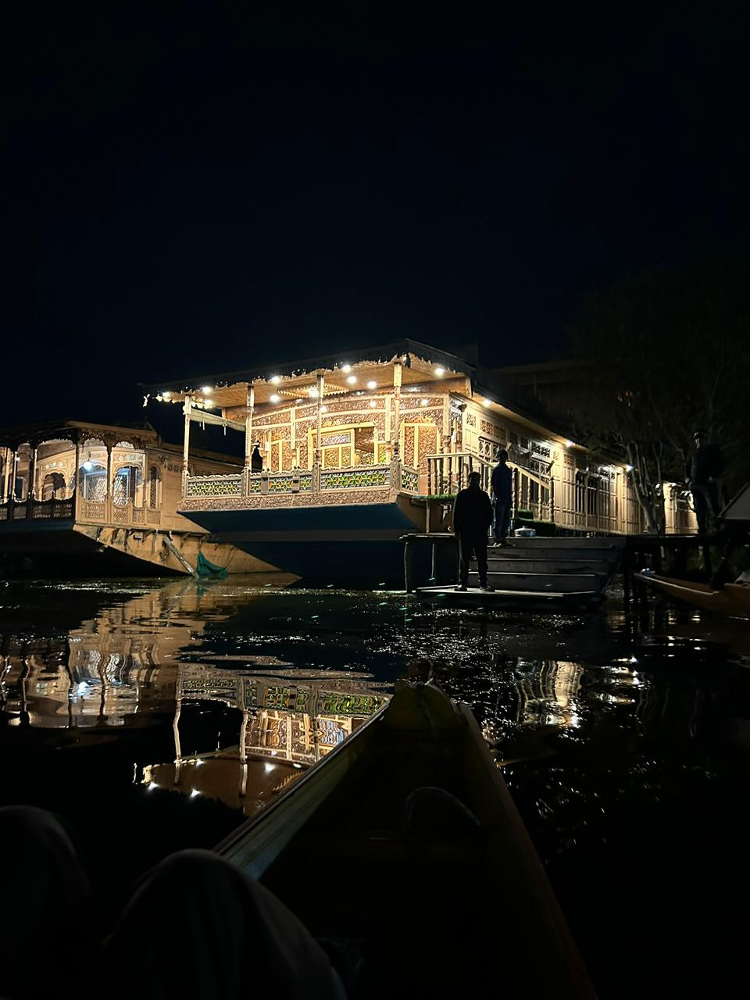
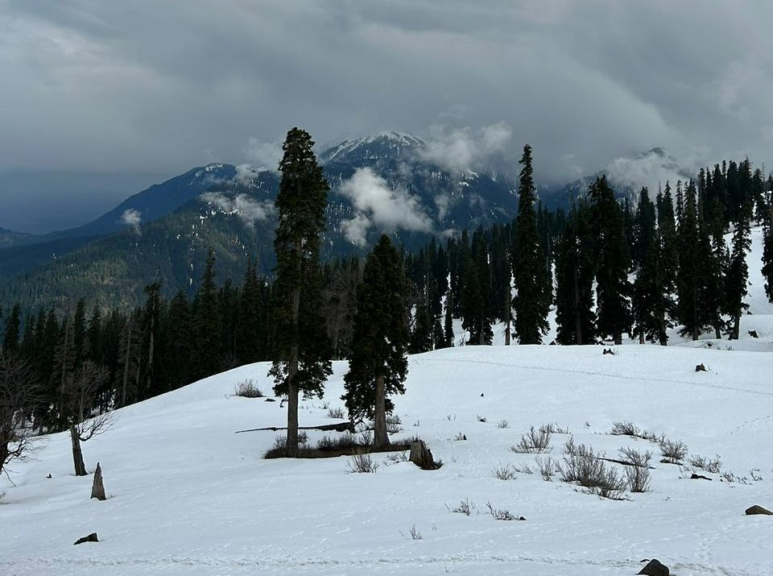
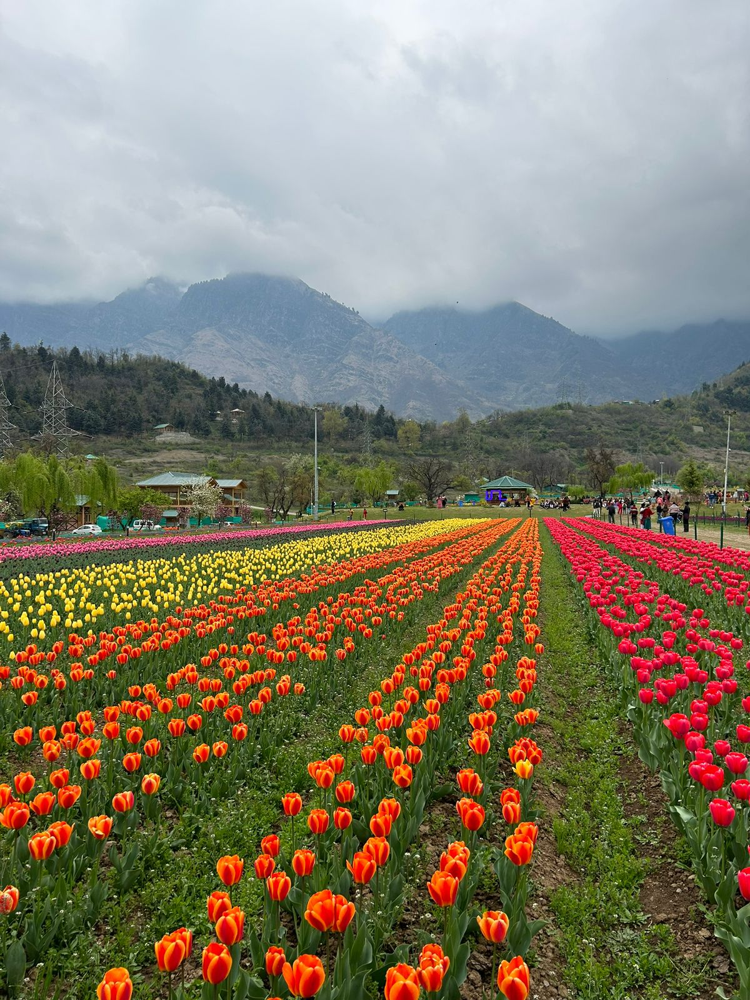
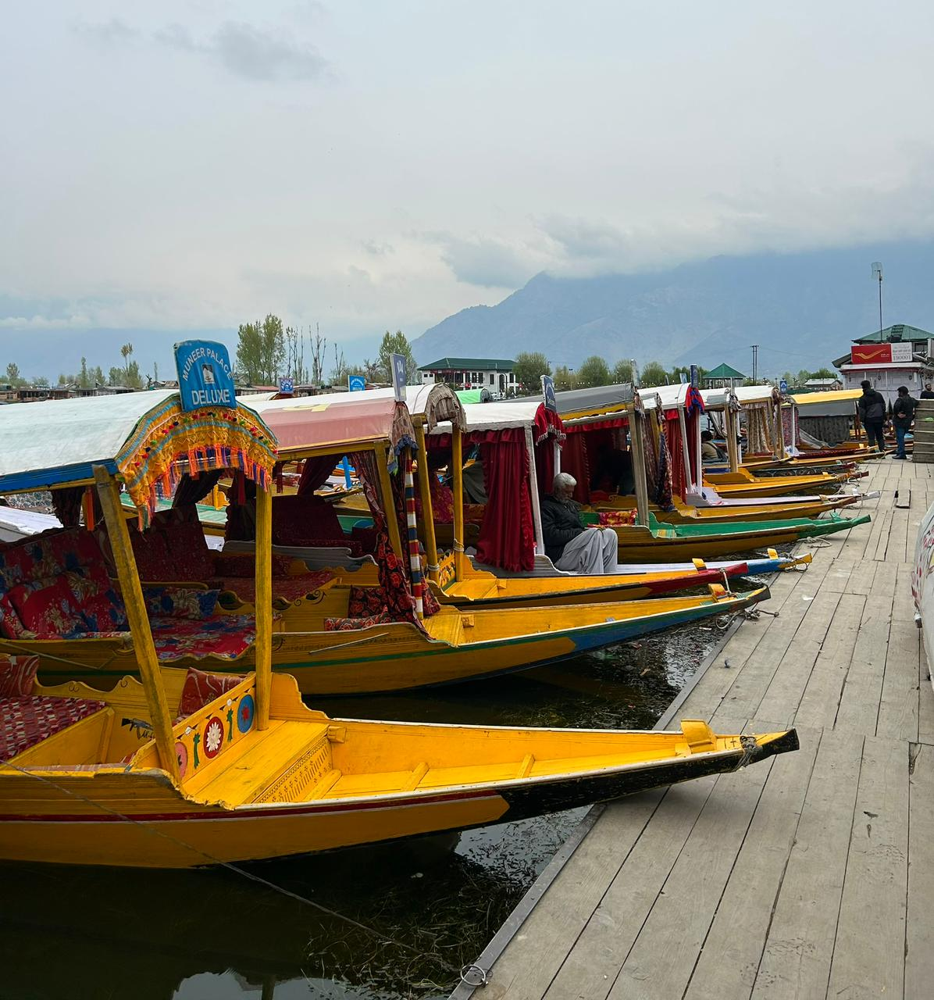
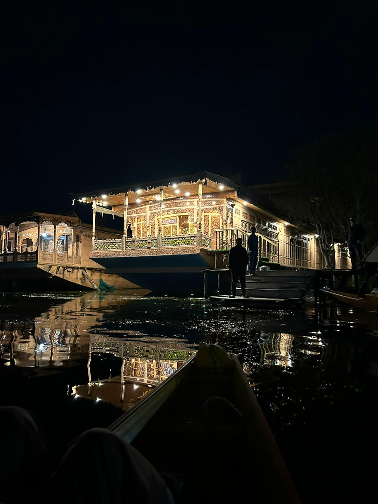
Soft tunes for snow-clad peaks and cozy moments by the window.